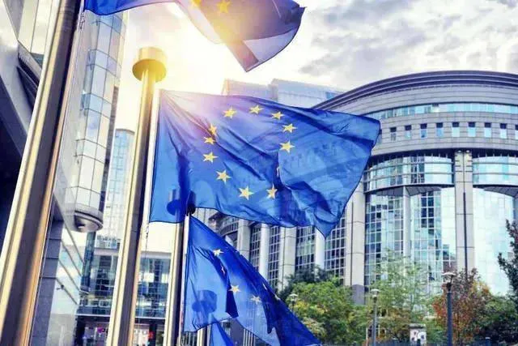

ევროპარლამენტში 14 მარტს მიხეილ სააკაშვილის საკითხზე იმსჯელებენ
14 მარტს, სტრასბურგში, ევროპარლამენტში მიხეილ სააკაშვილის საკითხზე იმსჯელებენ. მოსმენა პოლიტპატიმრების შესახებ ადგილობრივი დროით 16:30-17:00 საათზე არის ჩანიშნული. კერძოდ, საუბარი შეეხება საქართველოს ყოფილ პრეზიდენტს, მიხეილ სააკაშვილს, რუს ოპოზიციონერს ვლადიმირ კარა-მურზას და მოსკოვის კრასნოსელსკის მუნიციპალური ოლქის დეპუტატს, ალექსეი გორინოვს.